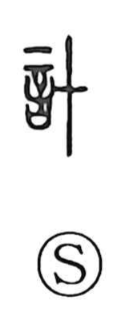

Explanation
計's received form combines 言 with 十. It concerns a completed reckoning, gathering individual items into a total that can be assessed. Annual accounts are one application of that summing-up.
The oldest formation is uncertain, but the word's sound connects it with 卟, examining the record of divinations. The successes and failures were counted and reviewed, giving a relation to 稽, investigating or comparing. 言 places prayers or solemn declarations within this probable early setting.
From reckoning and examining come calculation, estimation, consideration, and deliberation. A course of action determined through that assessment becomes a plan. The numerical and mental uses share the bringing-together of particulars to arrive at a result.